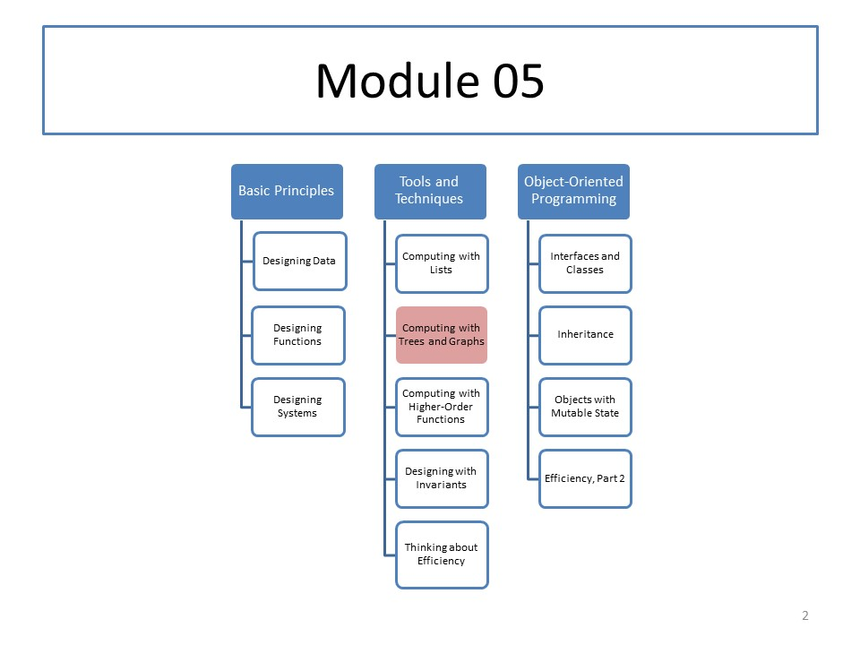

CS 5010: Module 05
Module Overview
In this module we will learn about branching structures, such as trees and S-expressions. S-expressions are nested lists, such as the lists we write when we write Racket programs. S-expressions are one of the great inventions of modern programming. They were the original idea from which things like XML and JSON grew.
We will also see an illustration of these ideas in Java. This is not intended to equip you to code in Java, but rather to give you a preview for our more serious use of Java later in the course.
Last, we will review some general principles for the design of branching data types, with the goal of giving you a deeper understanding of recursive functions on these structures.
Course Map
Readings
Read Part IV from the textbook.
Resources
Lessons
- Lesson 5.1 Trees
- Guided Practice 5.1
- Lesson 5.2 Multi-Way Trees
- Guided Practice 5.2
- Lesson 5.3 Lists of Lists
- Guided Practice 5.3
- Lesson 5.4 Doing It In Java
- Lesson 5.5 More About Recursive Data Types
Problem Set
Problem Set 05 was released on October 8, 2017.